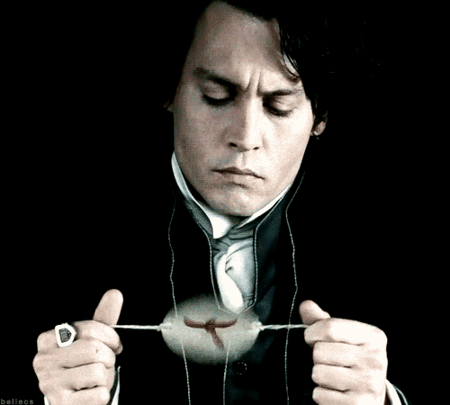
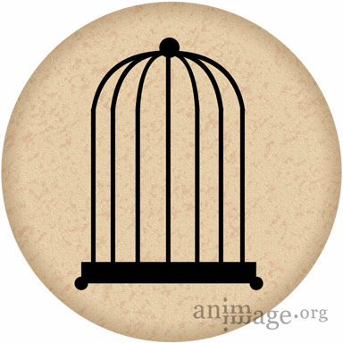
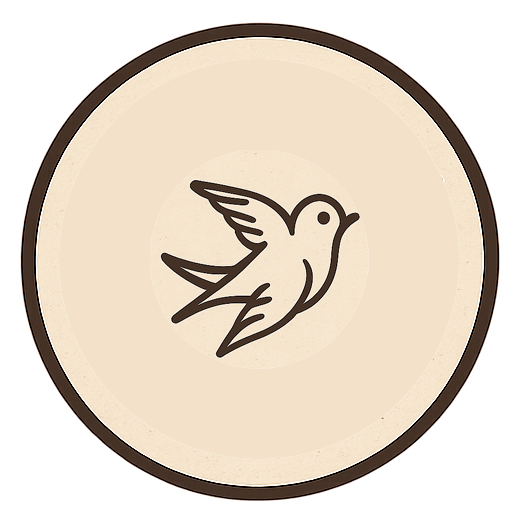
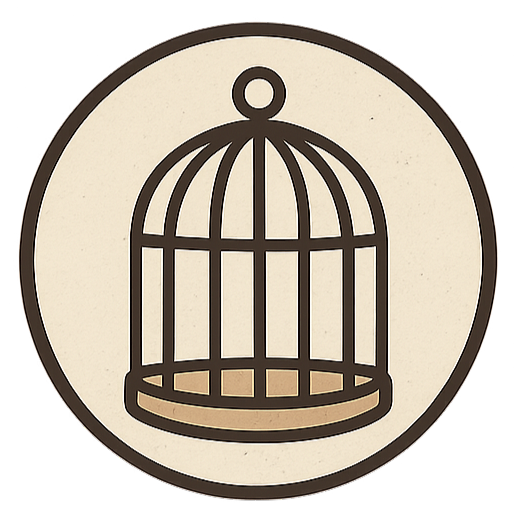

Thaumatrope
2 images différentes apparaissent comme une seule lorsque le disque tourne rapidement (ex: le corbeau & le renard).
 
 

Le Corbeau et le Renard
Maître Corbeau, sur un arbre perché,
Tenait en son bec un fromage.
Maître Renard, par l’odeur alléché,
Lui tint à peu près ce langage :
« Hé ! bonjour, Monsieur du Corbeau.
Que vous êtes joli ! que vous me semblez beau !
Sans mentir, si votre ramage
Se rapporte à votre plumage,
Vous êtes le Phénix des hôtes de ces bois. »
A ces mots le Corbeau ne se sent pas de joie ;
Et pour montrer sa belle voix,
Il ouvre un large bec, laisse tomber sa proie.
Le Renard s’en saisit, et dit : « Mon bon Monsieur,
Apprenez que tout flatteur
Vit aux dépens de celui qui l’écoute :
Cette leçon vaut bien un fromage, sans doute. »
Le Corbeau, honteux et confus,
Jura, mais un peu tard, qu’on ne l’y prendrait plus.
Jean de La Fontaine
Phénakistiscope
Un mode immersif inspiré de l'œuvre "Myth of Man" et des Rotoreliefs de Duchamp,
mêlant sons doux, vibrations lentes et textes évanescents.
Praxinoscope
rotoreliefs
Dans la spirale de sons et de lumières, un écho silencieux persiste.
Il ondule, comme un souvenir inscrit dans chaque vibration.
Il n'est pas visible pour tous, mais présent pour qui sait écouter ♫
.png)
.png)
.png)
.png)
.png)
.png)
.png)
.png)
.png)
.png)
.jpg)
.png)
.png)
.jpg)
.jpg)
.jpg)
.jpg)
.jpg)
.jpg)
.png)